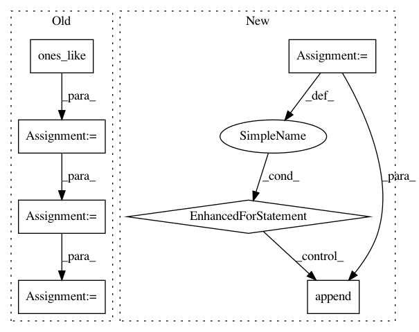

6a8815de0cec97480e2f0ce4769ceaf1121274bd,keras/engine/topology.py,Merge,compute_mask,#Merge#Any#Any#,1349
Before Change
masks = [K.expand_dims(m, 0) for m in mask if m is not None]
return K.all(K.concatenate(masks, axis=0), axis=0, keepdims=False)
elif self.mode == "concat":
masks = [K.ones_like(inputs[i][:-1]) if m is None else m for i, m in zip(inputs, mask)]
expanded_dims = [K.expand_dims(m) for m in masks]
concatenated = K.concatenate(expanded_dims, axis=self.concat_axis)
return K.all(concatenated, axis=-1, keepdims=False)
elif self.mode in ["cos", "dot"]:
return None
After Change
// Make a list of masks while making sure the dimensionality of each mask
// is the same as the corresponding input.
masks = []
for input_i, mask_i in zip(inputs, mask):
if mask_i is None:
// Input is unmasked. Append all 1s to masks, but cast it to uint8 first
masks.append(K.cast(K.ones_like(input_i), "uint8"))
elif K.ndim(mask_i) < K.ndim(input_i):
// Mask is smaller than the input, expand it
masks.append(K.expand_dims(mask_i))
else:
masks.append(mask_i)
concatenated = K.concatenate(masks, axis=self.concat_axis)
return K.all(concatenated, axis=-1, keepdims=False)
elif self.mode in ["cos", "dot"]:
return None
In pattern: SUPERPATTERN
Frequency: 3
Non-data size: 7
Instances
Project Name: keras-team/keras
Commit Name: 6a8815de0cec97480e2f0ce4769ceaf1121274bd
Time: 2016-07-27
Author: pradeep.dasigi@gmail.com
File Name: keras/engine/topology.py
Class Name: Merge
Method Name: compute_mask
Project Name: dmlc/gluon-cv
Commit Name: 74475cddbe3defe8be72abd1d98940475809646d
Time: 2018-04-09
Author: cheungchih@gmail.com
File Name: scripts/detection/ssd/train_ssd.py
Class Name:
Method Name: train
Project Name: dmlc/gluon-cv
Commit Name: d1f4a9f474c547b099aa67619f7ba035a9f8ffbc
Time: 2018-04-07
Author: cheungchih@gmail.com
File Name: scripts/detection/ssd/train_ssd.py
Class Name:
Method Name: train